Seven main principles in Dairy Herd Management
Dairy Herd Management is important factor for Dairy farms that maintain long-term high production. They need to successfully manage a number of key factors: cow nutrition, reproduction, comfort, and milking. Alongside these essentials, all dairy farms must deal with the logistics of weather, transportation, and expenses. It can be a lot to balance, but proper planning and thoughtful utilization of the latest dairy farm training and technology make it possible. This article outlines the principles of properly managing a dairy herd to maintain high milk production and happy cows.
NUTRITION AND FEEDING
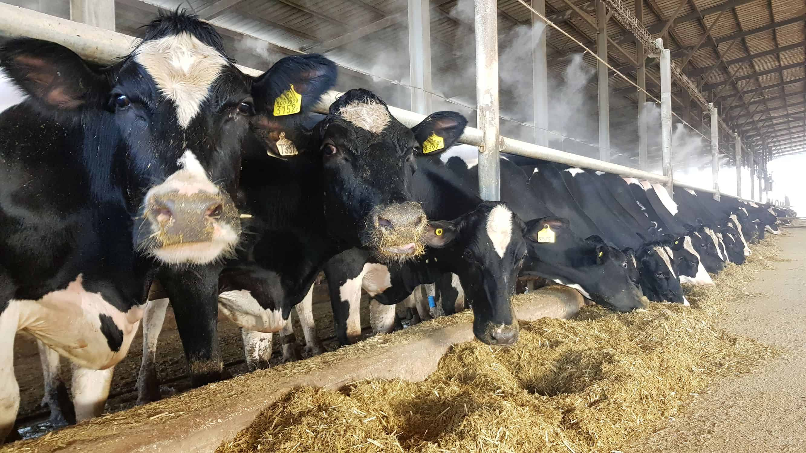How Much to Feed
The first step of planning nutrition is to know how much to feed your cows. Remember, your cows always need to be taking in more nutrients than they are producing in milk. When planning feed consumption, the industry standard is to measure food based on its dry matter content, or how much it weighs when all the water is extracted. Follow these guidelines for how much each category of cow needs:
-
- 1.Non-pregnant adult cows: 1.2% of body weight
- 2.Pregnant, non-lactating cows: 2% of bodyweight
- 3.Milking cows: 1.2% of bodyweight plus 5 kg per 10 liters of milk produced.
You see that properly managing feed means carefully monitoring milk production and bodyweight. If you want your cows to reach peak lactation, you’ll need to ensure they’re getting sufficient high-quality feed.
The Principles of Food Nutrition
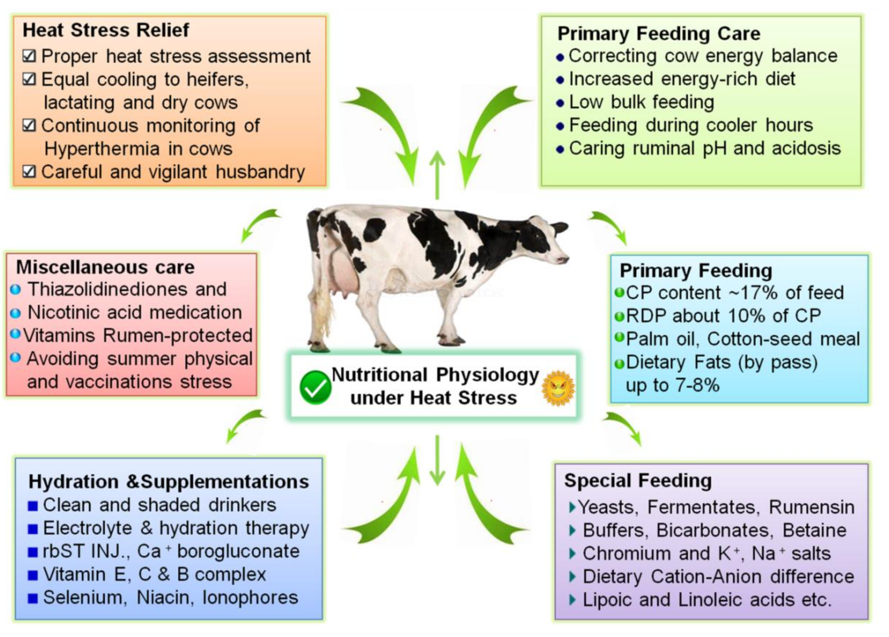The first principle of cow nutrition is to ensure that cows are getting sufficient energy, which they’ll get through starch and fats. Depending on what kind of feed is available in your region, that starch may come in the form of wheat, maize, barley, sorghum, or other grains. The fermentation of grain is what produces lactose within the milk. Cows also need fat – up to 6% of their ration. Sources of fat include cottonseed, brewers grain, and oils. In general, solid fats are better for cows’ digestion than liquids. Cows also need a regular intake of vitamins. Most fresh forage naturally contains the vitamins and minerals that cows need at sufficient levels, but you may need to add supplemental vitamins during off-seasons when you are using dried feed.
Selecting Forage
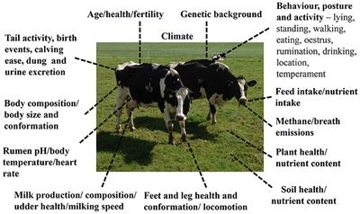
Feed management consists of two main parts: maintaining forage and storing silage. For most dairy farms, grass is the cheapest and one of the highest-quality forages available. The goal is to keep pastures in a young vegetative state when it contains the most nutrients. This requires regular upkeep of fertilization, irrigation, and grazing rotation. Most farms will need to supplement natural grass during some seasons. Farms with sufficient grass can dry their excess forage into hay. Otherwise, maize, barley, and legumes can all be good staple forages. The best choice will depend on local availability – the most affordable and best-quality crops may vary between different regions. Depending on the forage you choose, you will likely need to add concentrate and protein supplements, such as soybean or canola meal, rice bran, or citrus pulp. These supplements fill the gaps in the nutrients dried forage can provide.
Feeding Management
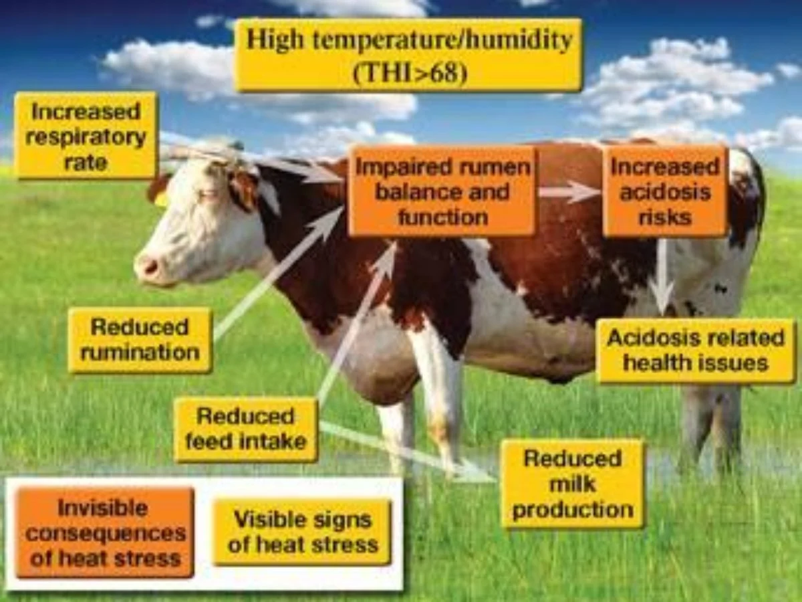
It is essential that cows have constant access to high-quality feed and clean water. Milking cows each need 60-70 liters of water a day, plus an additional 4-5 liters per liter of milk produced. To accomplish this, they need consistent access to water troughs. Cows drink a large percentage of their daily water right after milking, so it is essential to have plenty of trough space as cows leave the milking parlor. Likewise, fresh forage should be consistently available. There should always be more than enough space for each cow to access the forage so that dominant cows don’t bully younger ones and prevent them from eating. In general, you should feed with forage first, then supplement with nutritional concentrates. A general rule is to feed 1 kilogram of concentrate for each 2 kilograms of milk a cow produces. This ensures that they are receiving enough nutrients.
BREEDING AND REPRODUCTION
Goals and Planning
Effective reproduction management requires effective planning. No matter how large or small, each dairy farm should have a detailed routine for monitoring cows. Regular farm records will also help you to predict when cows will be in heat. This ensures that you always know which cows are in heat, are pregnant, or are showing signs of disease. You should also have plans in place for cows to undergo the transition period and to address any health issues that occur during pregnancy.
Heat Detection – Using the Latest Technology
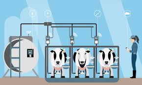
Determining when cows are in heat is the cornerstone of maximizing reproduction. Some farms simply train staff to visually monitor cows. Standing to be mounted is an obvious sign of being in heat. Cows in heat may also have mucus discharge and become restless. This restlessness enables heat to be detected by activity monitors. Much like human pedometers, activity monitors track how much a cow walks. Peaks in activity can indicate a cow in heat. Using pedometers on cows eligible for heat can lead to a higher rate of heat detection and more efficient breeding. They can be especially useful on large or spread out farms, where it may be difficult for staff to visually monitor each cow.
Calf Health
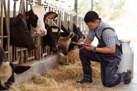
The biggest factor that affects calf health in the first few weeks is whether they are kept in a clean environment. When calves are first born, they should be placed within a clean, dry pen. Afterwards, they can be kept either in individual pens or in small groups. If you keep your calves in groups, separate groups by age and size. The key is to minimize access to manure, which harbors pathogens that can cause scours, the most common calf disease. Make sure that all equipment for calf feeding is kept clean, and all staff should wash their hands between handling adult cows and calves. In the first 12 hours after birth, each calf should be fed 4 liters of colostrums, either through a tube or a bottle, to boost their immune health. In their first couple of months, calves do not have fully developed rumens and therefore cannot digest solid food. They need to consume about 15% of their body weight in milk each day. Starting during their first week, you can introduce concentrates and high-quality hay so that calves begin to develop their rumen and get used to forage. This will help to prepare them for weaning.
MILK
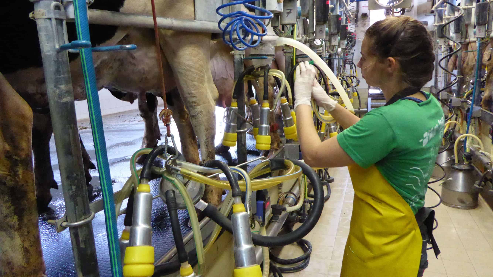Milking Tips
Milking is never as simple as connecting cows to the equipment. The following tips will help to make milking as efficient and low-stress as possible:
Cows are susceptible to stress – farm staff should try to maintain a calm, quiet environment
When moving into the milking parlor, keep cows moving slowly to avoid slipping
Teats should be clean and dry before being connected to milking equipment
Teats should be treated with an antiseptic after milking to prevent disease
Milking equipment should be checked daily by looking for vent blocks and watching milk flow
Milking equipment should be cleaned with water and sanitizer.
Managing Milk Quality
Immediately after milking, the milk needs to be chilled. For large farms, this might be in your own refrigeration units. Otherwise, milk needs to be transported right after milking to a colling collection center.
COW WELFARE
Principles of Cow Comfort
Cows need to be comfortable in order to have high production. A comfortable environment must provide the following:
1.Clean, dry bedding
2.Room to lie down
3.Shade in the heat
4.Non-slip flooring indoors
Shed Design Options
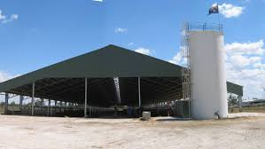
The ideal dairy barn depends on the region, particularly the weather. A dry manure lot may work well in a dry region, as it provides plenty of space and is cost-efficient to set up. However, rainfall creates mud that significantly increases the risk of illness. Compost barns feature sawdust or other bedding material spread out in a large shed. As long as you have sufficient affordable bedding material available, compost barns can be a comfortable and cost-efficient design. Free-stall barns are more expensive to build but offer some advantages. Free-stall barns feature individual cubicles along the sides with a wider open space in the middle. Cows can freely enter the stalls to lie down or eat. The arrangement gives cows room to move, but makes it easier to manage feeding and to keep manure separate from bedding.
Optimal Shed Design
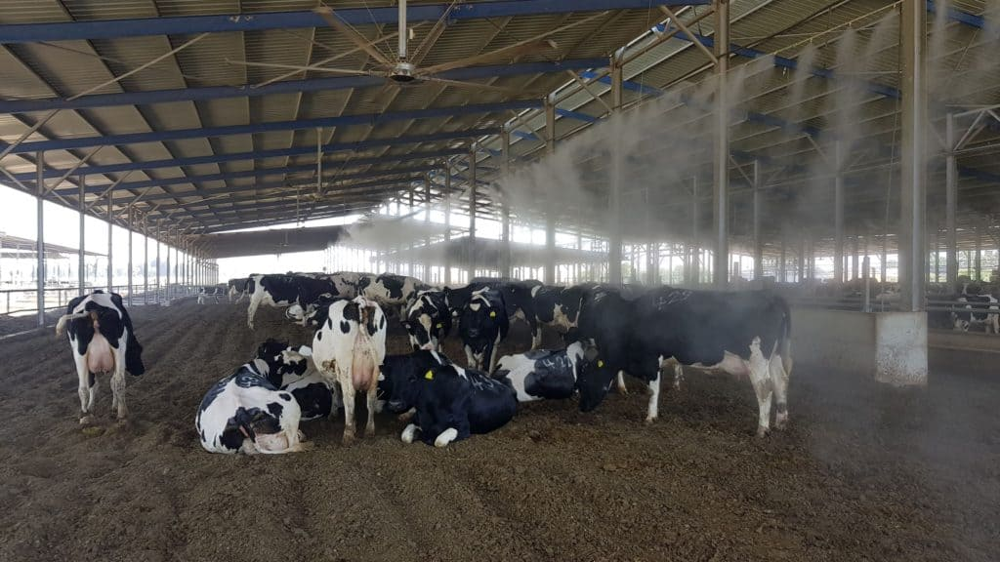
When designing a cow shed, you need to pay attention to a number of key areas. Although it may be more expensive to optimize these details, they will pay off in cow health and productivity.
Stalls with enough space for cows to move forward and to the sides
Ventilation
Non-slip flooring outside of the stalls
Space for feed
Effluent management that keeps manure separate from food and bedding
Soft bedding that is fluffed daily and replaced regularly
Access to clean water and food
Veterinarian Care
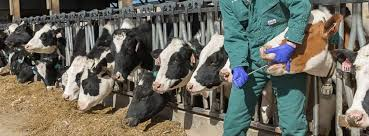
Veterinarians will be a regular part of managing cow health. While your own staff will be able to manage many parts of cow welfare, a veterinarian will be essential for providing medication, addressing medical emergencies, performing testing, and certifying necessary slaughters. It is important to factor veterinarian bills into your budget, and ideally you’ll want to establish a relationship with a local vet you like. That way every time a group of your cows need antibiotics or treatment for mastitis, you already have a team of professionals you can trust.
The Economics of Herd Health
Veterinarian care can be expensive, but so can health issues. These range from the loss of usable milk from mastitis, to the decreased production of a lame cow, to the death of sick cows and calves. Most dairy farms spend more on disease treatment than on preventative care. Some disease is inevitable, but increasing preventative care can often reduce disease and be most cost-effective in the long term. Preventative care includes obvious treatments, such as vaccines. Many vets also offer advising, training, and consulting on cow health. Making this kind of preventative care part of your budget and routine can improve cow health and profitability over time.
HEAT STRESS AND COMFORT
The Right Temperature
For most cows, an environment temperature between 6 and 18°C, or 43 and 65°F is ideal. Particularly during the summer, high temperatures can reduce milk production and lead to heat stress. Cows are not very effective at dissipating heat – they do so mostly through breathing. During hot months, it is therefore especially important to manage humidity levels and to give cows plenty of space. Keep in mind that cows’ comfort range will vary based on breed, and some cows have been bred specifically to withstand hotter or colder temperatures. You should plan based on your specific breed.
Cooling Strategies
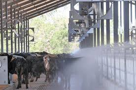
A number of different tactics can help to keep temperatures cool, and these strategies start with shed design. First, cow sheds need ventilation. Open-sided sheds can be opened up in the summer to maximize ventilation, and openings at the top of the roof can also keep air flowing. A steeper roof helps to increase air flow. Outdoor pastures should always have sufficient shade for all the cows to be out of the sun at once. When ventilation alone is not enough, sprinklers and fans can keep cows cool. Ceiling fans within a shed work to increase ventilation and evaporation. Sprinklers are perhaps the most effective ways to cool cows – they wet cows’ backs, and the evaporation of the water cools them down. Most farms find it effective to install sprinklers above the feed stations within the holding yard. That way they can be wet and have time to dry before milking.
Cows are susceptible to stress – farm staff should try to maintain a calm, quiet environment
When moving into the milking parlor, keep cows moving slowly to avoid slipping
Teats should be clean and dry before being connected to milking equipment
Teats should be treated with an antiseptic after milking to prevent disease
Milking equipment should be checked daily by looking for vent blocks and watching milk flow
Milking equipment should be cleaned with water and sanitizer.
1.Clean, dry bedding
2.Room to lie down
3.Shade in the heat
4.Non-slip flooring indoors
Stalls with enough space for cows to move forward and to the sides
Ventilation
Non-slip flooring outside of the stalls
Space for feed
Effluent management that keeps manure separate from food and bedding
Soft bedding that is fluffed daily and replaced regularly
Access to clean water and food
Albin Anto
Department of BCA(Computer Applications)
Albin Anto
Department of BCA(Computer Applications)
Department of BCA(Computer Applications)